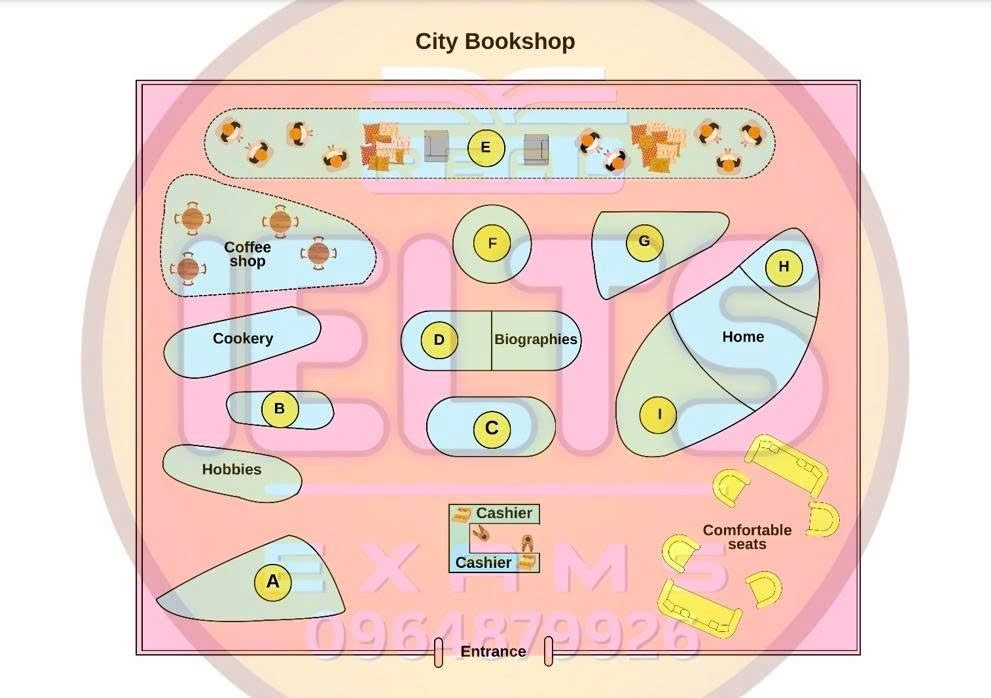

Phiếu trả lời Listening
Bấm số câu để nhảy tới câu đó. Bài làm được tự lưu trên máy này. Thời gian thi thật: khoảng 30 phút.
PART 1 Questions 1–10
Complete the notes below.
Write NO MORE THAN TWO WORDS AND/OR A NUMBER for each answer.
Arizona – travel advice Example
Visit Susie’s parents Susie’s parents live in a town called Williams Address: 6073 Drive Town history: named after a local hunter destroyed by fire in (rebuilt later) Susie’s parents will be at home after 2nd July 4th July – Independence Day: there will be in the evening Susie’s parents’ phone number: Grand Canyon
|
📜 Lời thoại Part 1
Now turn to Section 1 on page 2 of your Question Booklet. Section 1 You will hear an Englishman called Steve phoning a friend called Susie about his trip to Arizona in the United States. First you have some time to look at questions 1 to 4 on page 2. You will see that there is an example that has been done for you.
On this occasion only, the conversation relating to this will be played first. Hello? Hi Susie, it's Steve. Steve, hi! How are you doing?
I'm fine, thanks.
Actually, I've got to attend a conference in July in Tucson, Arizona, and I was hoping you could give me a few tips. You're from around there, aren't you? I sure am. Tucson's not my hometown though, but it's definitely worth seeing.
What's the weather like around then? Is it true it's about 40 degrees centigrade in the daytime? That's right, and not less than 25 at night. A bit different from England in July. The temperature during the day will be 40 degrees, so 40 has been written in the space.
Now we shall begin. You should answer the questions as you listen because you will not hear the recording a second time. Listen carefully and answer questions 1 to 4. Hello? Hi Susie, it's Steve.
Steve, hi! How are you doing? I'm fine, thanks. Actually, I've got to attend a conference in July in Tucson, Arizona, and I was hoping you could give me a few tips. You're from around there, aren't you?
I sure am.
Tucson's not my hometown though, but it's definitely worth seeing. What's the weather like around then? Is it true it's about 40 degrees centigrade in the daytime? That's right, and not less than 25 at night. A bit different from England in July.
True. I was wondering what to take with me. I won't need warm clothes then, will I? Well, you'll find that everywhere is air-conditioned, and it can feel quite cold sometimes, so a jacket would be a good idea.
You might need an umbrella as well, as we sometimes have thunderstorms during the day, but you can always pick one up when you get there. My conference is only for a couple of days, so I was wondering what I could do in Tucson. Well, it's a beautiful position.
I'd hire a car in Tucson, and then follow the trails in the desert. Okay, I'm writing all this down. Any other tips? Museums and stuff? Well, there are lots of museums.
The usual thing, like wildlife and history. But I think the most interesting is the Space Museum, so my advice would be to go there. Hmm, what else? Well, there are plenty of walks you can do.
The town itself is great, and there are plenty of places you can eat and drink when you get too hot and tired. Any chance of a game of golf? Oh, absolutely. There are loads of courses around Tucson.
Before you hear the rest of the conversation, you have some time to look at questions 5 to 10 on page 2. Now listen and answer questions 5 to 10. If you've got time, why don't you visit my parents? They'd love to see you. Great!
Can you give me their address? Sure.
They live in the town of Williams, at 6073 Fearnley Drive. Okay. How do you spell that? F-E-A-R-N-L-E-I-G-H.
6073 Fearnley Drive. Okay. Got that.
The town's in northern Arizona, and it's named after a hunter in the area in the early 1800s. He used to make a living shooting animals around there for their skins. Sounds interesting.
So, is it full of old buildings? Well, the post office is the oldest, as it was built in 1881. But there was a big fire in 1901, and most of the town was burnt down. But it didn't take them long to rebuild.
Oh, and the famous Route 66 goes through the town. That was built in 1926. So, when exactly are you going? The conference is from the 1st to the 2nd of July.
Will your parents be at home after that? Oh, yes. They wouldn't miss the 4th of July, Independence Day. Ah, okay.
So, lots of fireworks? As soon as the sun goes down. People come from miles around to see them. Why don't you give my parents a call? They're on 928-635-2271.
I'm sure they'd love to have you. Okay. I'll do that tonight.
And really, you shouldn't be in Arizona without taking a trip to the Grand Canyon for a few days. Hold on. I've got a leaflet here.
I took a friend there last summer. She had a great time. Okay.
It says here that there are a lot of tours you can take when you get there. Someone told me you could take a helicopter. Can I do that? Sure.
That tour takes about one and a half hours, and there are seven a day to choose from. The last is 5.30. You get a really good idea of the huge size of the canyon from up there. Sounds good.
Any chance I can get down to the river? I'm quite good in a canoe. Yes, you can do that, too. Let's see.
Ah, yes, there's an all-day trip. They provide you with waterproof clothes, but they recommend you bring sun cream. You'll really need it down on the river.
Well, that should keep me busy for a few days. Thanks, Susie. That's terrific.
I'll ring you again just before I go. That is the end of Section 1. You now have half a minute to check your answers.
PART 2 Questions 11–20
Questions 11–16
Label the map below.
Write the correct letter, A–I, next to Questions 11–16.

11 Art books
12 Gardening books
13 History books
14 Children’s books
15 Reading area
16 Self-help books
Questions 17–20
What does the speaker say about each new book?
Choose FOUR answers from the box and write the correct letter, A–F, next to Questions 17–20.
Comments
A a first-time author
B an award-winning book
C a true story
D has a sad ending
E has good illustrations
F part of a series
New books
17 Penny Pinchers
18 The Running Boy
19 The Hidden Code
20 The Orange Moon
📜 Lời thoại Part 2
Now turn to Section 2 on page 3. Section 2. You will hear the store manager of a bookshop give a short talk to new staff.
First, you have some time to look at questions 11 to 16 on page 3. Now listen carefully and answer questions 11 to 16. Good evening, everyone. Thanks for coming in.
This won't take long. Because we have quite a few new staff members, we thought it would be helpful to call you all in while the shop's closed to give you a short tour. After the tour, we'll introduce you to some of the book promotions we have this month.
Have you all got a copy of the map? Okay, let's move to the store entrance. I can point out each section to you quite easily from there. There are the two cashiers straight ahead, and on our right, close to the wall, is a large area divided into sections.
To attract students from the art college nearby, we decided to have books on art at the front of this section, and we're planning to include more texts from the prescribed book lists of local colleges in future. In the middle of this large section is the home section. The books here range from design to renovation.
And at the back of this section, we have a small selection of gardening books. As this is a new section for us, at first we thought we'd locate it on its own, on the other side of the cashiers. But we ultimately decided to have it at the back there, and it's well signposted.
Straight ahead, and directly behind the cashiers, there's the magazine and newspaper stand, which is closest to us. Behind this, you can see two sections side by side, history on one side and biographies on the other. In our other stores, these sections are usually located at the very back.
But sales haven't been great, so to try to attract more interest, we decided to make them more visible. Also within this central area, just behind biographies, we've placed our two fiction sections. The children's section is the larger area, over on the right, and the adults' section, the smaller one, on the left.
You'll see over in the far left-hand corner of the store, we have our coffee shop, which has become very popular. Behind this, running right along the back of the store, we've introduced a reading area. We've added chairs and cushions to create a cosy atmosphere.
And as you move around the store later, you'll see this comfortable seating idea in other parts of the shop. And finally, immediately to the left of the entrance, you'll see self-help books. These are here because we currently have a number of special offers connected with these topics.
When the specials have finished, we'll relocate this section to behind the coffee shop. OK, I think that's it. I'll let you have a browse around in a minute.
Before you hear the rest of the talk, you have some time to look at questions 17 to 20 on page 4. Now listen and answer questions 17 to 20. Next, I'd like to quickly introduce you to some of the new books we have in stock. Firstly, Elizabeth Honey's written a new book called Penny Pinchers.
It's a wonderful story, set in early Australia, and I thoroughly recommend it. It includes some beautiful drawings based on the artwork of the era. Next is The Running Boy.
It's about a boy who gets himself into some difficult situations at school. I think Simon Darling, the writer, has done a fantastic job in his debut book. He's currently working on his second novel, a crime story aimed at the adult market.
I'm sure that will definitely be worth waiting for. The next book I have here is The Hidden Code, which won several prizes at the last book convention. Marketed as a book for older children, it deals with realistic problems faced by young people today.
Basically, it's a work of fiction. It's something that should also be read by every parent, not just the younger members of the family. And finally, my personal favourite, The Orange Moon.
This is the final book in a set of novels about the lives of a fictional group of friends living in outback Australia. I hear this is being adapted to a movie, suitable for the whole family, which I'm sure will be very popular. That is the end of Section 2. You now have half a minute to check your answers.
PART 3 Questions 21–30
Questions 21–25
Choose the correct letter, A, B or C.
21 Katy thinks it might be inappropriate for academic essays to
22 The tutor says that in one type of conclusion students should
23 What does the tutor say about the bibliography?
24 What advice does the tutor give about quotations?
25 John suggests that the writer of the first essay should have
Questions 26–30
Complete the sentences below.
Write ONE WORD ONLY for each answer.
- The tutor says that the most basic requirement of an essay is relevance.
26 Katy thinks the writer separates different very clearly.
27 John feels that bullet points and sub-headings might be more appropriate for than for essays.
- The tutor thinks that paragraphs should be used to structure essays.
28 John particularly admires the way the writer backs up his statements with
29 Katy likes the writer’s use of language to link his
30 The tutor thinks that wide helps to develop writing ability.
📜 Lời thoại Part 3
Now turn to Section 3 on page 5. Section 3 You will hear a university lecturer talking to a female student called Katie and a male student called John about writing essays. First, you have some time to look at questions 21 to 25 on page 5. Now listen carefully and answer questions 21 to 25. Morning, Katie.
Morning, John. I want to talk about essays today and what the requirements are for this university. What kinds of things we look for when we're grading them, OK? So, let's look at those two sample essays I gave you last week.
I asked you to read them and to think about their strong and weak points. Do either of you have any general comments or questions about the first one? Katie? Well, the writer's made it quite clear what his own views are about this subject. But I thought in academic essays you weren't supposed to do that.
I thought you were meant to present all the different arguments and just appear to be neutral about which one you think is best. Students do sometimes come down quite firmly on one particular side. And that's OK, as long as they can show that they've given balanced consideration to all the issues.
Do you see what I mean? John, you're looking a bit uncertain. Did you want to say something? Well, what if you don't feel as sure about the debate as this student? There's another type of conclusion that's valid when you're writing at this level.
People don't have to come down strongly on a particular side.
They can say in the essay that the process of researching a particular topic has identified the importance of a range of studies that support different viewpoints. And then they return to the title of the assignment. Yes? And I'd say that it's a good idea to use some of the actual words that are in the title.
It shows the reader that you're still on track. OK? Yes. Tony, can I just ask you something about the bibliography? Of course.
This person's used italics when he refers to book titles in the reference section, but I thought we had to underline them. Actually, he's done it in the way we set out in the University Study Guide. That is the appropriate convention for titles.
You might think it's trivial, but presenting references appropriately is one of the requirements of a degree at this level, so I wouldn't be doing my job properly if I didn't stress that. And once people are used to it, they don't generally have a big problem with it. Yes, Katie? You mentioned the University Study Guide.
I looked in there to see what it said about quotations. The essays got a lot of quite long ones, and I was a bit surprised by that. I thought we weren't supposed to do that.
But using a range of quotations is a way of showing that you have actually read quite widely, isn't it? Well, not really. Unfortunately, some students just pick out extracts to quote without actually reading the whole thing. It's really a matter of using quotations appropriately.
I've marked essays in the past where literally every fourth or fifth sentence has been a quote, and that definitely isn't acceptable. You have to read widely, but you should be assimilating what you've read, and in general, presenting the ideas in your own words. So, when exactly should we use quotes? Particularly where there are definitions involved, as there are here.
Generally speaking, I'd say that you need to be aware of words within the essay title itself that are possibly contentious, terms that need defining. For instance, this one here has the word culture in it. Now, although you probably have a rough idea of what that term means, you might not be able to articulate it very well.
So, why not cite someone else's definition, rather than dream one up yourself? OK, any other comments on this first essay? What about the way the writer discusses research findings? One thing that struck me was the approach of the student to some of the things he'd read. He says things like, we aren't given enough evidence, or we don't know how he got his results.
When you're reading about someone's research at second hand, you often don't get told how many people were studied, or exactly what kind of questionnaires were used, or how exactly the results were analysed.
But I've always felt that it's just up to me to go to the primary sources and find out. It is important that you feel free to say if there are reasons why you can't make a clear judgement about something. But you don't have to, not at this level.
It's almost as if we just take things for granted. OK? Before you hear the rest of the discussion, you have some time to look at questions 26 to 30 on page 6. Now listen and answer questions 26 to 30. Now, let's look at the second essay then.
First of all, this essay title is in the form of a question, isn't it? Did you think this student answered the question? Yes. Good, because really that's the bottom line. The minimum criterion for an assignment is relevance.
Yes? Sometimes people don't seem to see the words on the page, but you have to be very focused. Secondly, what about the overall structure? Would you say that the essay is well-structured? Yes, I would.
I mean, sometimes writers mix different subtopics up, so it's quite difficult to follow the logic of the essay.
But here I think they're separated very clearly. Do you agree, John? Yes. I mean, it is very clear.
But is it OK to use subheadings and bullet points like this? I mean, in things like reports, they can be very useful, I know. But is it all right to use them in academic essays? Well, my general feeling is that it's best just to use paragraphs to signal changes of topic. The beginning of a paragraph should signal what you're going to say in general, and then as you get to the end of the paragraph, you should be signalling what you're going to move on to next.
One thing I thought was really good about this essay was the way the writer always gives examples to support statements. He never just assumes that explanations are enough. Yes.
I'm glad you brought that up. I was going to mention it myself. As you say, it's very helpful for the reader.
Another thing that helps the reader is the way he uses words and phrases to connect ideas. You mean things like however and on the other hand? Yes. And finally, in addition… Yes.
That really is one of the hallmarks of a good essay. The content is the most important thing, of course, but there's no doubt that language can make the content clearer, or otherwise, for the reader. Now, you may feel at this early stage that your writing skills are rusty, but reading is the key, I think.
As you read more and more extensively, you'll find that your own use of academic language will improve, and it'll get much easier to form your own ideas. That is the end of Section 3. You now have half a minute to check your answers.
PART 4 Questions 31–40
Complete the notes below.
Write ONE WORD ONLY for each answer.
Inventing a Universal Language Introduction
William Spencer
Ludwig Zamenhof
Bruce Goldie
Conclusion: why have invented languages failed?
|
📜 Lời thoại Part 4
Now turn to Section 4 on page 7. Section 4 You will hear part of a linguistics lecture about attempts to invent a universal language.
First, you have some time to look at questions 31 to 40 on page 7. Now listen carefully and answer questions 31 to 40. Good morning. Welcome back to this series of linguistics lectures.
Today, I will be talking about the idea of inventing a universal language. What does that mean? Well, most human languages were never invented. Instead, they evolved over time.
And the result is, you know, they're irregular and difficult to learn. So for centuries, people have dreamed of inventing a perfect universal language. The early invented languages that did exist were either created by priests to be used for religious purposes, or developed to help establish trade between different nations.
Scholars have found evidence that around 900 languages have been invented over the centuries in various parts of the world. But the linguist Erika Ockrent believes that the exact figure is unclear because she suspects many of these languages are now lost. No record of them survives.
The first really serious attempt to invent a language was made by William Spencer in the 17th century. Like so many others, he was frustrated by the irregularities in all existing languages. Accuracy was particularly important for Spencer because he wrote books.
His subject was science. As a result, he wanted to create a language where words had only one meaning, so everyone would understand precisely what they meant. At first, he thought the only way to do this was, instead of using the usual letters of the alphabet, A, B, C, and so on, he tried to substitute numbers for them.
However, this attempt failed, mostly because he couldn't describe complex ideas in this way. So Spencer went back to using the alphabet, but he grouped words together in a different way. When his dictionary was published in 1668, the words weren't classified in alphabetical order.
What he'd done was, he'd used the same system with which plants were divided up into groups based on their type. Another important attempt to invent a universal language was made by Ludwig Zamenhof, who was born in 1859. Zamenhof's language reflects his own background.
He grew up speaking Polish, English, French, German, and Russian. So, rather than create a completely new language, he mixed together five or six existing European languages. Then, Zamenhof used an interesting technique to help him develop his new language, he used it to write quite a few different songs, and this made his work more enjoyable.
He also thought that most European languages were too complicated, which meant that it was very difficult for people to learn them. Zamenhof wanted to create a more simple language. So, for example, he had a single prefix that was used before adjectives or verbs to make them negative, which is obviously much easier than English.
Then, finally, he published a book introducing his language to the world in 1887. Unfortunately, like other invented languages, no one was very interested at first. So, again, Zamenhof used an interesting approach.
In order to publicise the completed language, he made a list of everyone he knew and posted a letter to all of them using the new language. Many people were surprised.
Zamenhof's language was never used all around the world as he had hoped, but still, it's probably the most successful of all the invented languages.
In the 20th century, an Australian named Bruce Goldie tried something completely different. Goldie thought that a universal language would be easier to use if the starting point for each word was a picture. Goldie spent more than 20 years designing his new language and eventually published a book giving all the details in 1949. He also went on a lecture tour to promote it, but although the general public were often quite interested, much to Goldie's disappointment, his language was ignored by all of the major universities, despite frequent attempts to make them interested.
It wasn't until the 1970s that his language had some success. This was in Canada, in fact, where it was used to teach a group of disabled children in a hospital to read.
So what can we say in conclusion? Well, the truth is all attempts to create a universal language have failed and there are a number of reasons for this. Firstly, most universal languages have been seen as rather technical and plain. They are not good at conveying emotions so they've never been very popular. Another reason is the spread of English as a global language in the 20th century, particularly resulting from the film industry in Hollywood.
Lastly, the type of people who invented the languages began to change. In the past it had been academics, but more recently, the languages have often been created by writers, usually for entertainment. So they haven't been taken seriously.
That is the end of Section 4. You now have half a minute to check your answers.
Phiếu trả lời Reading
Bấm số câu để nhảy tới câu đó. Bài làm được tự lưu trên máy này. Thời gian thi thật: 60 phút.
READING PASSAGE 1 Questions 1–13
You should spend about 20 minutes on Questions 1–13, which are based on Reading Passage 1 below.
Western Immigration of Canada
A By the mid-1870s Canada wanted an immigrant population of agricultural settlers established in the West. No urban centres existed on the prairies in the 1870s, and rural settlement was the focus of the federal government’s attention. The western rural settlement was desired, as it would provide homesteads for the sons and daughters of eastern farmers, as eastern agricultural land filled to capacity. As well, eastern farmers and politicians viewed western Canada, with its broad expanses of unpopulated land, as a prime location for expanding Canada’s agricultural output, especially in terms of wheat production to serve the markets of eastern Canada.
B To bolster Canada’s population and agricultural output, the federal government took steps to secure western land. The Dominion of Canada purchased Rupert’s Land from the Hudson’s Bay Company in 1870. In 1872, the federal government enacted the Dominion Lands Act. This act enabled settlers to acquire 160 acres of free land, as long as settlers remained on their land for a period of three years, made certain minor improvements to the land, and paid a $10.00 registration fee. The Canadian government also created a Mounted Police Force in 1873. The Mounties journeyed west to secure the area for future settlers. By 1876 the NWMP had established themselves in the West. The major posts included Swan River, Fort Saskatchewan, Fort Calgary, Fort Walsh and Fort Macleod. All of these initiatives attracted a number of Eastern-Canadian settlers, as well as European and American immigrants, to Canada’s West, and particularly to the area of Manitoba.
C The surest way to protect Canadian territory, and to achieve the secondary goal for joining British Columbia to the rest of the country, was to import large numbers of Eastern Canadian and British settlers. Settling the West also made imperative the building of a transcontinental railway. The railway would work to create an east-west economy, in which western Canada would feed the growing urban industrial population of the east, and in return become a market for eastern Canadian manufactured goods.
D Winnipeg became the metropolis of the West during this period. Winnipeg’s growth before 1900 was the result of a combination of land speculation, growth of housing starts, and the federal government’s solution in 1881 of Winnipeg as a major stop along the CPR. This decision culminated in a land boom between 1881 and 1883 which resulted in the transformation of hamlets like Portage la Prairie and Brandon into towns, and a large increase in Manitoba’s population. Soon, Winnipeg stood at the junction of three transcontinental railway lines which employed thousands in rail yards. Winnipeg also became the major processor of agricultural products for the surrounding hinterland.
E The majority of settlers to Winnipeg, and the surrounding countryside, during this early period, were primarily Protestant English-speaking settlers from Ontario and the British Isles. These settlers established Winnipeg upon a British-Ontarian ethos which came to dominate the society’s social, political, and economic spirit. This British-Ontarian ethnic homogeneity, however, did not last very long. Increasing numbers of foreign immigrants, especially from Austria-Hungary and Ukraine soon added a new ethnic element to the recent British, the older First Nation Métis, and Selkirk’s settler population base. Settling the West with (in particular) Eastern Canadians and British immigrant offered the advantage of safeguarding the 49th parallel from the threat of American take-over, had not the Minnesota legislature passed a resolution which provided for the annexation of the Red River district. The Red River in 1870 was the most important settlement on the Canadian prairies. It contained 11,963 inhabitants of whom 9,700 were Métis and First Nations. But neighbouring Minnesota already had a population of over 100,000.
F Not all of the settlers who came to western Canada in the 1880s, however, desired to remain there. In the 1870s and 1880s, economic depression kept the value of Canada’s staple exports low, which discouraged many from permanent settlement in the West. Countries including Brazil, Argentina, Australia, New Zealand and the United States competed with Canada for immigrants. Many immigrants and thousands of Canadians chose to settle in the accessible and attractive American frontier. Canada before 1891 has been called “a huge demographic railway station” where thousands of men, women, and children were constantly going and coming, and where the number of departures invariably exceeded that of arrivals.”
G By 1891 Eastern Canada had its share of both large urban centres and problems associated with city life. While the booming economic centres of Toronto and Montreal were complete with electricity and telephones in the cities’ wealthiest areas by the turn of the century, slum conditions characterised the poorest areas like the district known as ‘the Ward’ in Toronto. Chickens and pigs ran through the streets; privy buckets spilled onto backyards and lanes creating cesspools in urban slums. These same social reformers believed that rural living, in stark contrast to urban, would lead to a healthy, moral, and charitable way of life. Social reformers praised the ability of fresh air, hard work, and open spaces for ‘Canadianizing’ immigrants. Agricultural pursuits were seen as especially fitting for attaining this ‘moral’ and family-oriented way of life, in opposition to the single male-dominated atmosphere of the cities. Certainly, agriculture played an important part in the Canadian economy in 1891. One-third of the workforce worked on farms.
H The Canadian government presented Canada’s attractions to potential overseas migrants in several ways. The government offered free or cheap land to potential agriculturists. As well, the government established agents and/or agencies for the purpose of attracting emigrants overseas. Assisted passage schemes, bonuses and commissions to agents and settlers and pamphlets also attracted some immigrants to Canada. The most influential form of attracting others to Canada, however, remained the letters home written by emigrants already in Canada. Letters from trusted friends and family members. Letters home often contained exaggerations of the ‘wonder of the new world.’ Migrant workers and settlers already in Canada did not want to disappoint, or worry, their family and friends at home. Embellished tales of good fortune and happiness often succeeded in encouraging others to come.
Questions 1–7
Reading Passage 1 has eight paragraphs, A–H.
Choose the correct heading for paragraphs B–H from the list of headings below.
Choose the correct number, i–xii, in boxes 1–7.
List of Headings i Not all would stay in Canada forever ii Government’s safeguard in the West iii Eastern Canada is full iv Built-up to the new infrastructure v An exclusive British domination in Ontario established ever since vi Ethnics and language make-up vii Pursuing a pure life viii Police recruited from mid-class families ix Demand of western immigration x Early major urban development of the West xi Attracting urban environment xii Advertising of Western Canada |
Example: Paragraph A – ix
1 Paragraph B
2 Paragraph C
3 Paragraph D
4 Paragraph E
5 Paragraph F
6 Paragraph G
7 Paragraph H
Questions 8–13
Complete the summary below.
Write NO MORE THAN TWO WORDS from the passage for each answer.
| With the saturation of Eastern Canada, the Western rural area would supply for the descendants of easterners. Politicians also declared that the West had the potential to increase the of Canada, especially the crop that was consumed in the East. The federal government started to prepare and made it happen. First, the government bought land from a private , and legally offered a certain area to people who stayed for a qualifying period of time. Then, a mounted was founded to secure the land. However, the best way to protect citizens was to build a to transport the migrants and goods between the West and the East. |
READING PASSAGE 2 Questions 14–26
You should spend about 20 minutes on Questions 14–26, which are based on Reading Passage 2 below.
Why don’t we sleep?
A Fifty-six million prescriptions for sleeping medication were handed out by doctors in America last year. Yet remarkably little is being done to understand insomnia’s root causes. Socially and economically, the undertreatment of sleeplessness is hugely expensive. The Institute of Medicine, an independent scientific advisory group, estimates nearly 20 percent of all major accidents on the road are associated with driver sleepiness. The loss in terms of productivity within the workplace is even higher, costing billions. Then there are the softer costs which remain unmeasured but still exist; for example, the damaged relationships with others. If other medical problems were causing such widespread harm, governments would act, but US authorities contribute only about $230 million a year for the funding of sleep research, comparable to the amount that the manufacturers of popular sleeping pills spent in three months on advertising. Currently most medical school students get no more than four hours of training on sleep disorders; some get none.
B If we don’t know why we can’t sleep, it’s in part because we don’t really know why we need to sleep in the first place. We know that we divide it between periods of deep-wave sleep and rapid eye movement (REM) sleep, when the brain is as active as when we’re awake, but our voluntary muscles are paralyzed. We know that all mammals sleep, and that there are some insects and reptiles that only half sleep, in order to remain aware of their environment and predators.
C The predominant theory of sleep is that the brain demands it. Recently, researchers at Harvard, led by Robert Stickgold, tested undergraduates on various aptitude tests, allowed them to nap, then tested them again. They found that those who had engaged in REM sleep subsequently performed better in pattern recognition tasks, such as grammar, while those who slept deeply were better at memorization.
D Such studies suggest that memory consolidation may be one function of sleep. Giulio Tononi, a sleep researcher at the University of Wisconsin, published an interesting twist on this theory a few years ago. His study showed that the sleeping brain seems to delete redundant or unnecessary synapses or connections. So the purpose of sleep may be to help us remember what’s important, by letting us forget what’s not.
E Sleep is likely to have physiological purposes too. Some researchers have found that sleep deprivation impedes wound healing in rats, and others have suggested that sleep helps boost the immune system and control infection. But these studies are not conclusive. At Stanford University, William Dement, co-founder of the Stanford Sleep Medicine Center, explains what he knows after 50 years of research, about the reason we sleep. ‘As far as I know,’ he said, ‘the only reason we need to sleep that is really, really solid is because we get sleepy.’
F The Stanford clinic does more than 3,000 overnight sleep studies a year. Their main diagnostic tool is the polysomnogram, the main element of which is the electroencephalograph (EEG), which captures the electrical output from a patient’s brain. As the EEG records a person’s sleep patterns, the polysomnogram technicians also measure body temperature, muscle activity, eye movement, and breathing. Then they look over the data for signs of abnormal sleep. When a person has narcolepsy, for instance, they plunge from wakefulness into REM sleep without any intermediate steps. However, Clete Kushida, the clinic director, told me he can spot most people’s sleep problems right at the intake interview. ‘There are those who cannot keep their eyes open, and those who just speak of their exhaustion but don’t actually fall asleep. The former often have sleep apnea where they stop breathing. The latter have true insomnia.’
G In sleep apnea, muscle relaxation allows the soft tissue of the throat to close, shutting off the sleeper’s air passage. When the brain realizes it is not getting oxygen, it sends a signal to the body to wake up. The sleeper awakes, inhales, and sleep returns. Apnea is a serious problem but only indirectly a sleep disease. True insomniacs are people who either can’t get to, or can’t stay asleep for any evident reason.
H While apnea can be treated with a device that forces air down the sleeper’s throat to keep the airways open, the treatment of classic insomnia is not so clear cut. Acupuncture may help. It has long had this role in Asian medicine and is being studied at the University of Pittsburgh sleep center now. Typically in the US, insomnia is treated in two ways. First come the sleeping pills. Though safer than they once were, they can still lead to psychological addiction. ‘Many users complain that their sleeping-pill sleep seems different, and they feel unfocussed on waking. Sleeping pills are not a natural way to sleep,’ points out Charles Czeisler, director of the Harvard Health and Safety Group.
I The second step in treating insomniacs is usually cognitive behavioral therapy (CBT). In CBT, a psychologist teaches insomniacs to think about sleep problems as manageable, and to practice good ‘sleep hygiene’: sleep in a dark room, go to bed only when you are sleepy, don’t exercise beforehand. Studies have shown that CBT is more effective than sleeping pills at treating long-term insomnia, but many sufferers aren’t convinced. ‘Some people continue in my experience to struggle,’ says John Winkelman, another sleep center director. ‘They’re not super-satisfied with their sleep.’
Questions 14–17
Complete the summary below.
Write ONE WORD ONLY from the passage for each answer.
Insomnia in the USA Last year the high number of doctors gave their patients highlights the fact that insomnia is a serious issue in the USA. It is evidently responsible for a number of serious traffic and has a considerable effect on company A lack of sleep can also have a harmful effect on different relationships, although there are no statistics on this. Unfortunately, there is insufficient official funding given to research into sleep problems, and the given at medical school is also insufficient to deal with insomnia. |
Questions 18–23
Reading Passage 2 has nine paragraphs, A–I.
Which paragraph contains the following information?
Write the correct letter, A–I, in boxes 18–23.
18 a mention of different cultural approaches to dealing with insomnia
19 indications that sleep has a positive effect on health
20 the effects of different kinds of sleep on mental performance
21 reasons why various species of animal sleep in different ways
22 the suggestion that sleep allows us to get rid of insignificant information
23 a description of how the brain responds when a person stops breathing
Questions 24–26
Look at the following statements (Questions 24–26) and the list of people below.
Match each statement with the correct person, A–E.
Write the correct letter, A–E, in boxes 24–26.
List of People
A Giulio Tononi
B William Dement
C Clete Kushida
D Charles Czeisler
E John Winkelman
24 Research tells us that we sleep as a reaction to our body’s signals.
25 People suffering from insomnia are easily recognisable.
26 Therapy does not always enable people to achieve good quality sleep.
READING PASSAGE 3 Questions 27–40
You should spend about 20 minutes on Questions 27–40, which are based on Reading Passage 3 below.
Understanding symbols
Judy DeLoache describes her research into the difficulties children experience with symbols
A About 20 years ago I had one of those wonderful moments when research takes an unexpected but fruitful turn. I had been studying toddler memory and was beginning a new experiment with two-and-a-half-and three-year-olds. For the project, I had built a model of a room that was in my laboratory. The real space contained basic furniture such as a couch and table. The miniature version was as similar as possible to its larger counterpart: the furniture was the same shape and material and was arranged in the same position. For the study, a child watched as we hid a miniature toy – a plastic dog we called Little Snoopy* – in the model. We then encouraged the child to find ‘Big Snoopy, a large version of the toy ’hiding in the same place in his big room.’
B The three-year-olds were very successful. After they observed the small toy being placed behind the miniature couch, they ran into the room and found the large toy behind the real couch. But the two-and-a-half-year-olds failed abysmally. They cheerfully ran into the room to retrieve the large toy, but most had no idea where to look, even though they remembered where the tiny toy was hidden in the miniature room and could readily find it there.
C Their failure to use what they knew about the model to draw an inference about the real room indicated that they did not appreciate the relation between the model and the room. I realised my memory study was instead a study of symbolic understanding and that the children’s failure might be telling us something about how and when children acquire the ability to understand that one object stands for another.
D The first type of symbolic object that infants and young children master is the picture. No symbols seem simpler to adults, but infants initially find pictures perplexing. The problem stems from the duality inherent in all symbolic objects: they are real in themselves and also representations of something else. A few years ago I became intrigued by anecdotes suggesting that infants do not appreciate this duality-stories of a baby trying to pick up a depicted toy or fit a foot into a photograph of a shoe. We assumed such behaviour would be rare and therefore difficult to study.
E Fortunately we were wrong. We began testing infants’ understanding of pictures by putting a book of highly realistic colour photographs of individual objects in front of nine-month-olds. To our surprise, every child in the study reached out to feel or scratch the pictures. The confusion seems to be conceptual not perceptual. Infants can perfectly well perceive the difference between objects and pictures and given the choice they will choose the real thing. But they do not yet fully understand what pictures are and how they differ from real objects. However, when depicted objects bear little resemblance to the real thing – as in a black and white drawing – infants rarely explore them. By 18 months, babies have come to appreciate that a picture merely represents an object; instead of manipulating the paper, they point to pictures and name objects. Nevertheless, it takes several years for the nature of pictures to be completely understood.
F Studies have shown that, until the age of four, many children think that turning a picture of a bowl of popcorn upside down will result in the depicted popcorn falling out of the bowl.
G Pictures are not the only source of confusion for very young children. In a third experiment, we brought a group of toddlers (18-to 30-month-old children) Into a room containing a child’s slide, a chair, and a toddler-sized car. The children played with these for a while. Then we secretly replaced each object with an identical miniature version. Most children attempted to perform the same actions with the miniature items that they had with the larger ones. Some tried to sit on the chair, others attempted to climb into the car. Interestingly, most of the children showed little or no reaction to their failed attempts. We think this probably reflects the fact that toddlers’ daily lives are full of unsuccessful attempts to do one thing or another. This confusion has implications for educational practice. Teachers everywhere use blocks or other objects to represent numerical quantity. However, if young children do not understand the relation between an object and what it represents, this could be counterproductive. To demonstrate this, we taught six-and seven-year-olds a difficult subtraction problem using blocks.
H We taught an identical comparison group the same concept, but using pencil and paper. Both groups learned to solve the problems equally well, but the group using blocks took three times as long to do so.
I Dual representation also comes into play in many children’s books. Modern children’s books are often 3D, with features that encourage children to interact directly with the book itself, for example flaps that can be lifted to reveal pictures. Graduate student Cynthia Chong and I reasoned that these features might distract children from the information. Accordingly, we used different types of books to teach letters to 30-month-old children. One was a simple old-fashioned alphabet book with each letter accompanied by an appropriate picture. The other was a 3-D version. The children using the traditional book subsequently recognised more letters than those using the 3-D book.
J Presumably, the children could concentrate more easily with the plain 2-D book, whereas with the other one they were distracted by the 3-D activities. Less may be more when it comes to educational books for young children.
Questions 27–32
Choose the correct letter, A, B, C or D.
27 In the first paragraph, what did the children in the experiment have to do?
28 What was the result of the first experiment?
29 In the fourth paragraph, what does the writer say about children and pictures?
30 In the third experiment, what did the writer notice about the reactions of the toddlers?
31 What did the experiment involving a mathematical problem suggest about children’s learning?
32 What does DeLoache conclude about the results of her and Chong’s experiment?
Questions 33–35
Complete each sentence with the correct ending, A–F, below.
Write the correct letter, A–F, in boxes 33–35.
A that a three-year-old may still expect an image to perform a real task. B how quickly children can learn the alphabet. C the best age for children to begin school. D the effectiveness of symbolic objects as teaching tools. E whether young children are puzzled by pictures. F that young children expect tiny objects to function in the same way as life-sized ones. |
33 The test involving 9-month-old babies attempted to find out
34 The third experiment revealed
35 The maths experiment was designed to assess
Questions 36–40
Do the following statements agree with the claims of the writer in Reading Passage 3?
In boxes 36–40 on your answer sheet, write
YES if the statement agrees with the claims of the writer
NO if the statement contradicts the claims of the writer
NOT GIVEN if it is impossible to say what the writer thinks about this
36 The results of the first experiment revealed unexpected information.
37 Infants react the same way to both drawings and photographs.
38 Toddlers are used to failing in many of the tasks they try to perform.
39 The confusion of symbols and real objects has little significance for educational practice.
40 Children enjoy reading 3-D books more than 2-D books.